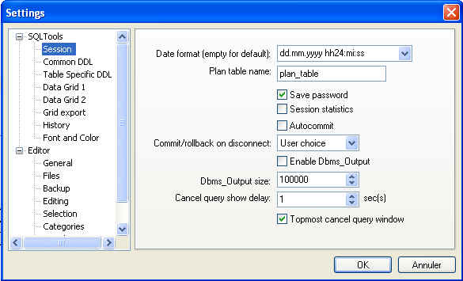

Tools -> Settings...
Previous
Top
Show all necessary informations and options to configure SQLTools settings. You can change at the same time general options (session, history...) and editor-specific (backup, templates, ...) options.
